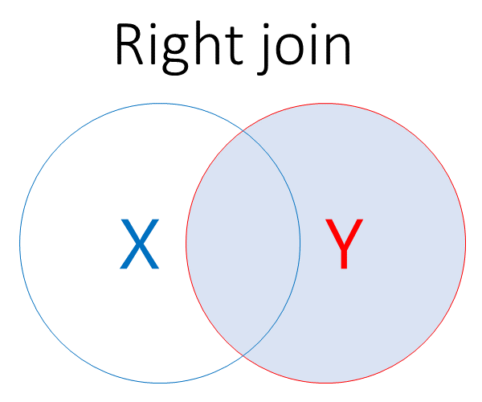
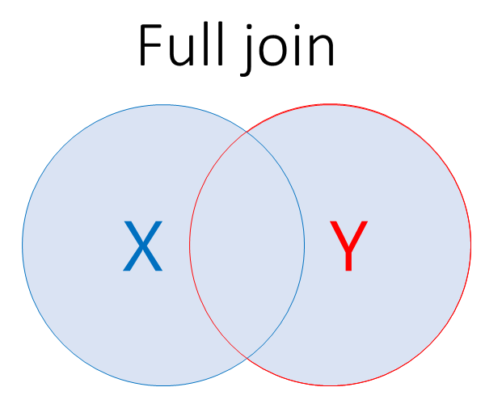
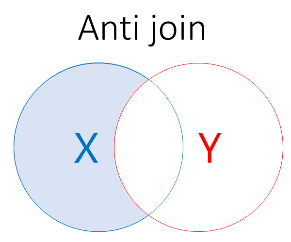

# A tibble: 10 × 3
category value key
<chr> <dbl> <dbl>
1 x 5 3
2 x 2 7
3 x 4 2
4 x 7 1
5 x 9 1
6 y 2 5
7 y 7 2
8 y 3 2
9 y 2 8
10 y 2 14Joins
Joins are where we merge two tibbles together in some way, while broadly preserving the structure of each. There are a few different ways of joining data in dplyr, and we’ll explore the following approaches during this session:
- binding joins, which are joins where data are added based on position. For example, we merge the each of the first columns in the two tibbles into one new first column.
- mutating joins, which are joins where data are added by values to match existing data. For example, we might match two tibbles based on CHI number, and connect two otherwise dissimilar data sets together.
- filtering joins, where we filter one dataset using a joining relationship. For example, we might remove any individuals from a dataset based on their CHI appearing in a second dataset
- non-equi joins, which we’ll only mention here, but will deal with properly in a more developed follow-up session
Setup
Binding
Introduction
Binding joins don’t change the structure of the data in any way. Instead, they just bring together multiple tibbles into one. That’s nearly always about adding rows using bind_rows()
bind_rows()
bind_rows() does exactly what the name describes. It adds the rows of one tibble to another, resulting in one joined tibble containing all the rows:
rbind()
That’s similar to the base R rbind()
# A tibble: 10 × 3
category value key
<chr> <dbl> <dbl>
1 x 5 3
2 x 2 7
3 x 4 2
4 x 7 1
5 x 9 1
6 y 2 5
7 y 7 2
8 y 3 2
9 y 2 8
10 y 2 14Missing values
Unlike rbind(), which breaks if the column names don’t match, bind_rows() will create new columns and fill with NAs if the names of the columns don’t match:
# A tibble: 10 × 4
wrong_name value key category
<chr> <dbl> <dbl> <chr>
1 x 5 3 <NA>
2 x 2 7 <NA>
3 x 4 2 <NA>
4 x 7 1 <NA>
5 x 9 1 <NA>
6 <NA> 2 5 y
7 <NA> 7 2 y
8 <NA> 3 2 y
9 <NA> 2 8 y
10 <NA> 2 14 y coalesce()
coalesce() is a good way to gather values that become spread out across mis-matched columns:
# A tibble: 10 × 3
value key category
<dbl> <dbl> <chr>
1 5 3 x
2 2 7 x
3 4 2 x
4 7 1 x
5 9 1 x
6 2 5 y
7 7 2 y
8 3 2 y
9 2 8 y
10 2 14 y ID
And you can create an optional ID column to show where each row originated, which is helpful for debugging:
# A tibble: 10 × 4
ID category value key
<chr> <chr> <dbl> <dbl>
1 1 x 5 3
2 1 x 2 7
3 1 x 4 2
4 1 x 7 1
5 1 x 9 1
6 2 y 2 5
7 2 y 7 2
8 2 y 3 2
9 2 y 2 8
10 2 y 2 14Many binds
You can also bind_rows() by list:
# A tibble: 20 × 3
category value key
<chr> <dbl> <dbl>
1 x 5 3
2 x 2 7
3 x 4 2
4 x 7 1
5 x 9 1
6 y 2 5
7 y 7 2
8 y 3 2
9 y 2 8
10 y 2 14
11 x 5 3
12 x 2 7
13 x 4 2
14 x 7 1
15 x 9 1
16 y 2 5
17 y 7 2
18 y 3 2
19 y 2 8
20 y 2 14bind_cols()
Another function, another descriptive name. bind_cols() adds columns to the starting tibble, but otherwise works as bind_rows():
# A tibble: 5 × 6
category...1 value...2 key...3 category...4 value...5 key...6
<chr> <dbl> <dbl> <chr> <dbl> <dbl>
1 x 5 3 y 2 5
2 x 2 7 y 7 2
3 x 4 2 y 3 2
4 x 7 1 y 2 8
5 x 9 1 y 2 14cbind()
Another base R near-equivalent - although note that cbind() is prone to generating illegal column names that can be extremely hard to fix:
category value key category value key
1 x 5 3 y 2 5
2 x 2 7 y 7 2
3 x 4 2 y 3 2
4 x 7 1 y 2 8
5 x 9 1 y 2 14Mutating joins
Introduction
To get started with mutating joins in dplyr, we could do much worse than the first part of the manual page, which is nice and clear:
The mutating joins add columns from y to x, matching rows based on the keys:
-
inner_join(): includes all rows in x and y. -
left_join(): includes all rows in x. -
right_join(): includes all rows in y. -
full_join(): includes all rows in x or y. -
anti_join(): includes all rows in x that are not in y.
If a row in x matches multiple rows in y, all the rows in y will be returned once for each matching row in x.
cross_join()
cross_join() creates all possible combinations (the Cartesian product) of two datasets. If we have m rows in one, and n rows in another, our cross join will have m * n rows.
# A tibble: 25 × 6
category.x value.x key.x category.y value.y key.y
<chr> <dbl> <dbl> <chr> <dbl> <dbl>
1 x 5 3 y 2 5
2 x 5 3 y 7 2
3 x 5 3 y 3 2
4 x 5 3 y 2 8
5 x 5 3 y 2 14
6 x 2 7 y 2 5
7 x 2 7 y 7 2
8 x 2 7 y 3 2
9 x 2 7 y 2 8
10 x 2 7 y 2 14
# ℹ 15 more rows
cross_join() + filters/mutates
If we filter (and otherwise tidy up the structure) of cross-joins, we can create other types of join. For example, an inner join is a cross join with a filter to retain only rows with identical keys:
# A tibble: 2 × 6
category.x value.x key.x category.y value.y key.y
<chr> <dbl> <dbl> <chr> <dbl> <dbl>
1 x 4 2 y 7 2
2 x 4 2 y 3 2Less painfully, we can do that direct with inner_join(), as we’ll see below.
by
We need to specify which values our join should match on. There are two ways of doing this. The traditional approach has used by:
# A tibble: 2 × 5
category.x value.x key category.y value.y
<chr> <dbl> <dbl> <chr> <dbl>
1 x 4 2 y 7
2 x 4 2 y 3join_by()
A newer approach, which offers some more advanced options for matching, is join_by(). For simple cases, it’s very similar to the standard by approach:
# A tibble: 2 × 5
category.x value.x key category.y value.y
<chr> <dbl> <dbl> <chr> <dbl>
1 x 4 2 y 7
2 x 4 2 y 3Understanding join_by()
That short-hand syntax stands for:
# A tibble: 2 × 5
category.x value.x key category.y value.y
<chr> <dbl> <dbl> <chr> <dbl>
1 x 4 2 y 7
2 x 4 2 y 3That lets us deal easily with non-identical column names:
Non-identical column names
Our examples so far have used data with identical column names. Let’s break that now:
# A tibble: 2 × 5
category.x value.x new_key category.y value.y
<chr> <dbl> <dbl> <chr> <dbl>
1 x 4 2 y 7
2 x 4 2 y 3It’s possible to use non-equality expressions inside join_by() for more advanced joins known as non-equi joins. We don’t really explore those in this session, but will plan to develop a separate set of material in the future.
inner_join()

inner_join() joins two tibbles by whichever key column you supply using by=
inner_join() example
# A tibble: 2 × 5
category.x value.x key category.y value.y
<chr> <dbl> <dbl> <chr> <dbl>
1 x 4 2 y 7
2 x 4 2 y 3This returns all the rows that exist in both tibbles.
left_join()

left_join() includes all the rows in the first tibble
left_join() example
# A tibble: 6 × 5
category.a value.a key category.b value.b
<chr> <dbl> <dbl> <chr> <dbl>
1 x 5 3 <NA> NA
2 x 2 7 <NA> NA
3 x 4 2 y 7
4 x 4 2 y 3
5 x 7 1 <NA> NA
6 x 9 1 <NA> NAWe get returned the rows that exist in x, and any that match keys from y. Any ‘extra’ rows in simple_a are filled in with NAs. We’ve also tweaked the column names in this example, using the suffix argument.
right_join()

right_join() includes all the rows in the second tibble
right_join() example
# A tibble: 5 × 6
category.x value.x key.x category.y value.y key.y
<chr> <dbl> <dbl> <chr> <dbl> <dbl>
1 x 4 2 y 7 2
2 x 4 2 y 3 2
3 <NA> NA NA y 2 5
4 <NA> NA NA y 2 8
5 <NA> NA NA y 2 14We get all the rows that exist in y, and any that match keys from simple_a, again, filling with NAs where appropriate. Here, we’re demonstrating the keep argument, which will repeat the column on which we’re joining for each of the tibbles.
full_join()

full_join() gives us all the rows from all the tibbles
full_join() example
# A tibble: 9 × 5
category.x value.x key category.y value.y
<chr> <dbl> <dbl> <chr> <dbl>
1 x 5 3 <NA> NA
2 x 2 7 <NA> NA
3 x 4 2 y 7
4 x 4 2 y 3
5 x 7 1 <NA> NA
6 x 9 1 <NA> NA
7 <NA> NA 5 y 2
8 <NA> NA 8 y 2
9 <NA> NA 14 y 2All rows in both tibbles, filling with NAs where needed.
Filtering joins
While the mutating joins mean that different parts of the data are joined together, it’s also worth knowing about a couple of filtering joins. Unlike mutating joins, filtering joins just return a sub-set of the first dataset.
anti_join()

Anti-join removes any rows whose keys match those in the second set, so it always returns either the original tibble (if there aren’t any matches), or a smaller sub-set tibble with any matching rows removed.
anti_join() example
# A tibble: 4 × 3
category value key
<chr> <dbl> <dbl>
1 x 5 3
2 x 2 7
3 x 7 1
4 x 9 1semi_join()
Semi-join is an anti-anti-join(), returning only those rows that do not match keys.
semi_join() example
# A tibble: 1 × 3
category value key
<chr> <dbl> <dbl>
1 x 4 2Because it’s a filtering join, it only returns rows from the first tibble, but otherwise the logic is identical to the inner join.
Helpers
There are a group of helpers that can be added to joins that are mainly helpful for debugging, or preventing odd behaviours in more complex joins
Helper example
# A tibble: 2 × 6
category.x value.x key.x category.y value.y key.y
<chr> <dbl> <dbl> <chr> <dbl> <dbl>
1 x 4 2 y 7 2
2 x 4 2 y 3 2Nesting joins
This is useful if you’re trying to understand exactly what’s happening during a complex join. Instead of bringing in columns from the second tibble directly, nest_join() creates the new columns as a list col:
# A tibble: 5 × 4
category value key y
<chr> <dbl> <dbl> <list>
1 x 5 3 <tibble [0 × 2]>
2 x 2 7 <tibble [0 × 2]>
3 x 4 2 <tibble [2 × 2]>
4 x 7 1 <tibble [0 × 2]>
5 x 9 1 <tibble [0 × 2]>Dealing with list columns
This is for the purrr lists session really, but list columns can be tidyr::unnest()’d into standard columns. In this example we need to worry a bit about the column names, because they’re identical in the two tibbles:
# A tibble: 2 × 5
category value key y_category y_value
<chr> <dbl> <dbl> <chr> <dbl>
1 x 4 2 y 7
2 x 4 2 y 3